Een omroep die je kunt voelen
Een smartwatch-app die omroepberichten op het station vertaalt naar trillingen en een duidelijke alert op de pols, voor reizigers die de omroep niet kunnen horen.
- Rol: UX/UI & Interaction Designer
- Periode: 3 maanden
- Team: Individueel
- Platform: watchOS
- Tools: Figma, ProtoPie
Introductie
Bij een spoorwijziging klinkt er een omroep. Wie doof of slechthorend is, mist dat bericht, en daarmee vaak de trein. Ik ontwierp een watch-app die de omroep vervangt door iets wat je voelt en ziet.
De opdracht kwam van school: NS heeft nog geen smartwatch-touchpoint, en de vraag was hoe een watch reizigers op het station kan helpen. Zelf koos ik ervoor om me te richten op dove en slechthorende reizigers, omdat zij bij een wijziging het meest missen.
Probleem
De omroep is alleen hoorbaar. Borden moet je zelf in de gaten houden, en NS-meldingen komen binnen op een telefoon in je zak.
Doelgroep
Dove en slechthorende treinreizigers, op een druk perron en onder tijdsdruk.
Mijn rol
Individueel: onderzoek, concept, interactieontwerp en het volledige watch-ontwerp in Figma en ProtoPie, gebouwd met het NS design system. De telefoonschermen zijn de bestaande NS-app, licht aangepast.
Ontwerpvraag
Hoe kan de NS dove en slechthorende reizigers op tijd informeren over spoorwijzigingen en vertragingen op het station, zonder dat zij afhankelijk zijn van geluid?
Hoe krijg je de omroep mee als je hem niet hoort?
Waar sluit de watch op aan?
Ik bestudeerde de reisplanner, de meldingen in de NS-app, NS InfoPlus en het NS design system.
Wat gaat er mis?
Updates komen vaak alleen via de omroep. Dove reizigers missen daardoor spoorwijzigingen en volgen dan de menigte, die hen vaak naar de verkeerde plek brengt.
Hoe doen bestaande ontwerpen het?
Een trilwekker, flitsende deurbel of rookmelder voor doven combineert licht en trilling. De trilling voel je ook als je niet kijkt, het licht zie je ook als je de trilling mist.
Ontwerpen voor voelen en zien
Voelen vóór lezen
Elke wijziging begint met een trilling, die sterker wordt zolang de reiziger niet reageert.
Geel is rust, rood is actie
De rand vertelt de status zonder tekst: geel als alles klopt, rood zolang een wijziging niet bevestigd is.
Eerst twee woorden
Eerst alleen “⚠ Spoor wijziging”. Blijft de reiziger kijken, dan verschijnt het nieuwe spoor (watchOS: short look → long look).
Zwart met NS-kleuren
Zwart voor maximaal contrast en batterij, met kleuren uit het NS design system.
Eerst breed schetsen, dan kiezen
Voor elke kerninteractie schetste ik vier richtingen op papier, voordat ik iets in Figma ontwierp.
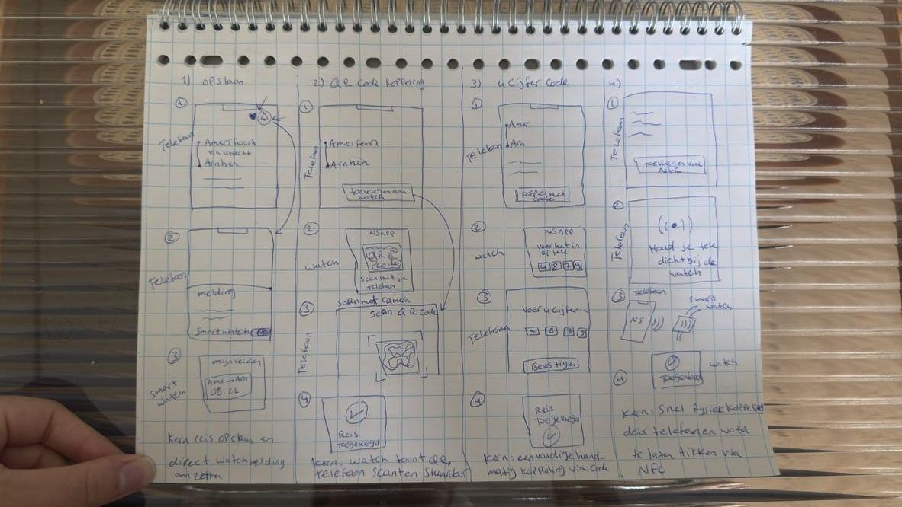
Automatisch via de NS-app, QR-code, cijfercode of NFC-tik. Gekozen: automatisch, want op het perron mag koppelen geen extra handeling kosten.
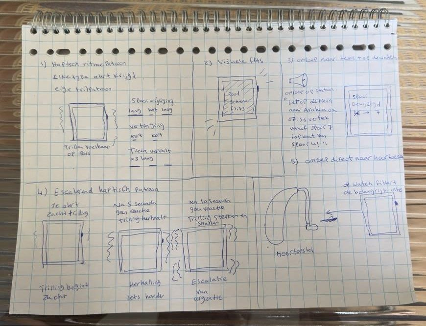
Trilpatroon per melding, rode flits, omroep als tekst, escalerende trilling of koppeling met het hoortoestel. Gekozen: rode flits plus escalerende trilling, want samen bereiken ze iedereen, ook wie niet kijkt.
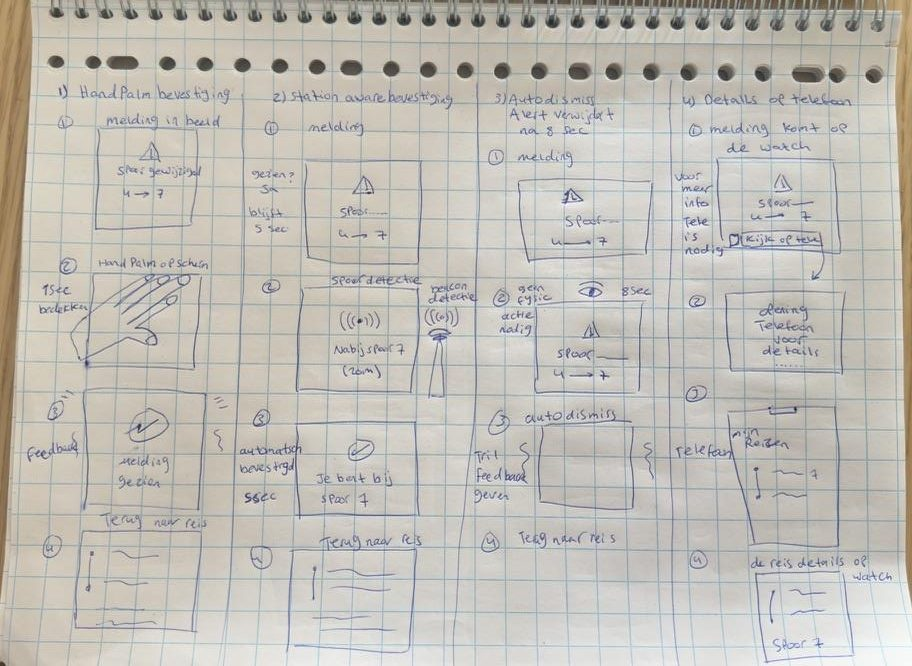
Handpalm op het scherm, automatisch bij het juiste spoor, verdwijnen na 8 seconden of details op de telefoon. Gekozen: swipe omhoog, want alleen een bewuste actie bewijst dat de reiziger het begrepen heeft.
De telefoon plant, de watch waarschuwt
De watch pikt de reis automatisch op uit de NS-app, zodat de reiziger op het station niets extra hoeft te doen. Eén tap op “Akkoord” bevestigt welke reis gevolgd wordt.
Telefoon · NS-app
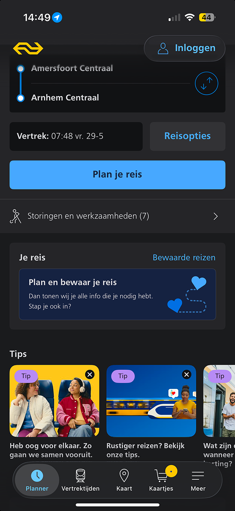
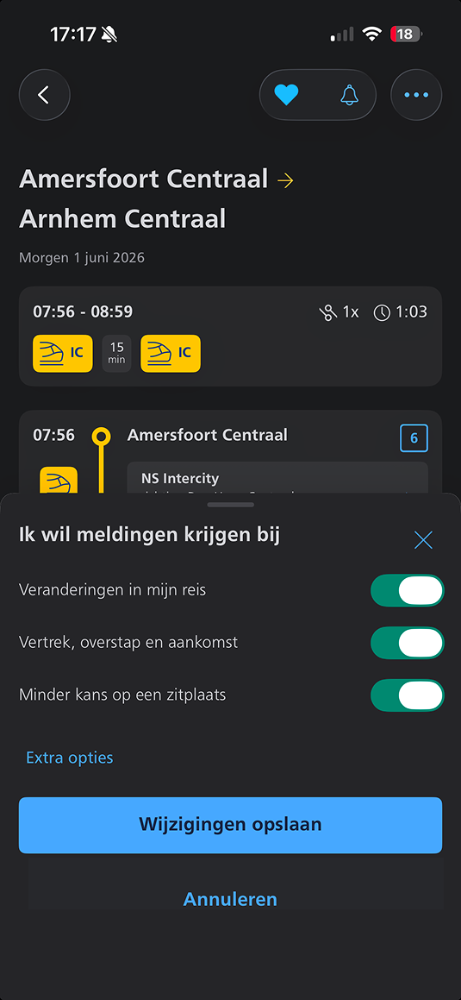
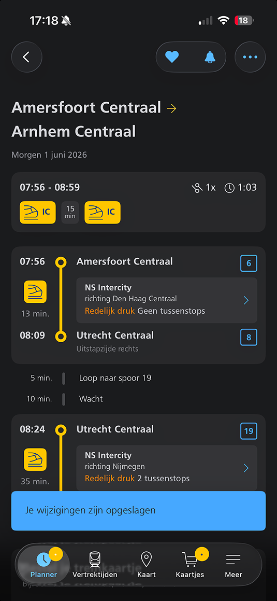
Watch · PolsSignaal
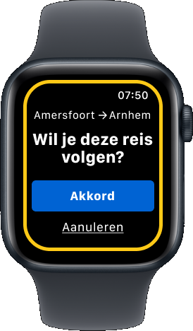
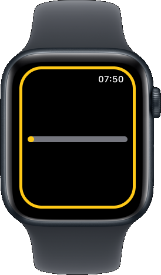
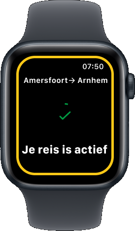
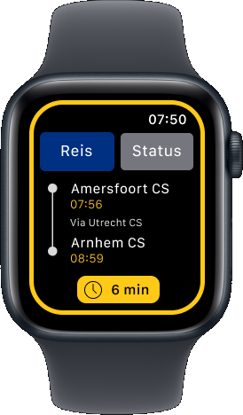
Fatima op perron 4
Fatima is doof. Ze wacht op de intercity van 07:56 en kijkt op haar telefoon, niet naar de borden.
- 07:52:00Het spoor wijzigt naar 7. Ze voelt een trilling en ziet de rode rand.
- 07:52:02Short look: “⚠ Spoor wijziging”.
- 07:52:04Long look: “Spoor 7” met een bewegende pijl. Ze swipet.
- 07:52:05Bevestigd. Fatima haalt haar trein.
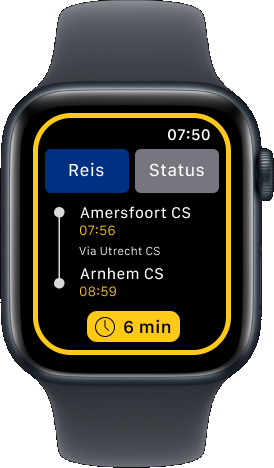
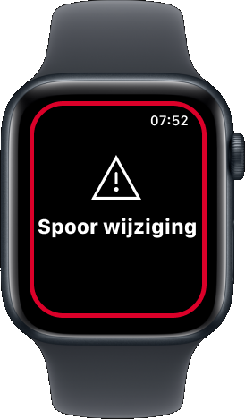
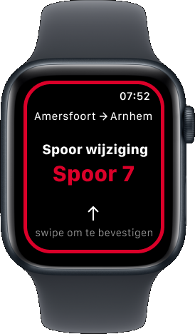
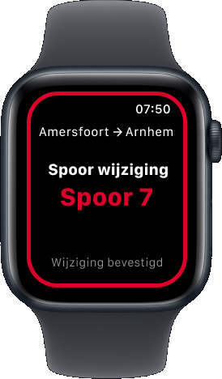
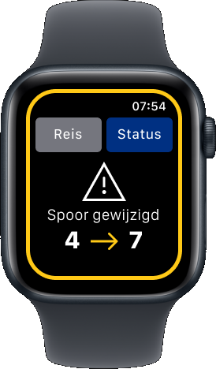
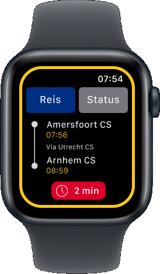
Wat als ze niet reageert?
Er is geen omroep als vangnet. Daarom wordt de trilling elke 5 seconden sterker, tot de wijziging bevestigd is.
| Moment | Visueel | Haptiek (watchOS) |
|---|---|---|
| Fase 1 · wijziging | Rode rand flitst | Medium, elke 0,75 s |
| Fase 2 · geen reactie | Rode rand pulseert | Heavy, elke 0,5 s |
| Fase 3 · nog steeds niets | Rode rand knippert snel | Failure, elke 0,25 s |
| Bevestigd | Groen vinkje | Success |
Elke situatie een eigen scherm
Bij uitval of een gemiste overstap stuurt de watch je door naar de telefoon, waar ruimte is voor alternatieven. Een fout trilt bewust zachter, zodat je voelt dat het geen spoorwijziging is.
Wijzigingen
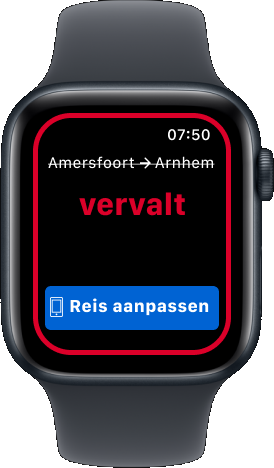
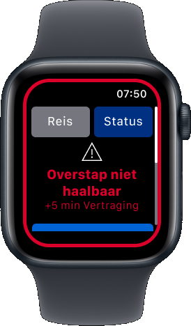
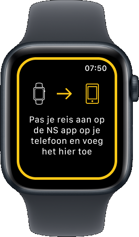
Fouten
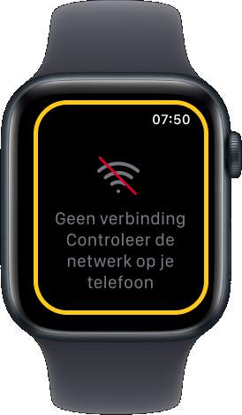
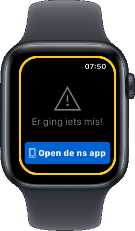
Ontworpen volgens watchOS
Typografie · SF Compact
Gemaakt voor 2 seconden kijken
- Het spoornummer is het grootst: dat is het enige wat de reiziger écht nodig heeft.
- Touch targets van minimaal 44 pt. De Akkoord-knop loopt over de hele breedte.
- Maximaal twee acties per scherm.
- Reis en Status zijn twee tabbladen, zodat elk scherm één vraag beantwoordt: “waar ga ik heen?” of “wat is er nu aan de hand?”. Zo staat een wijziging (4 → 7) groot in beeld, zonder de route eromheen.
- Canvas van 198 × 242 pt (Apple Watch 45 mm).